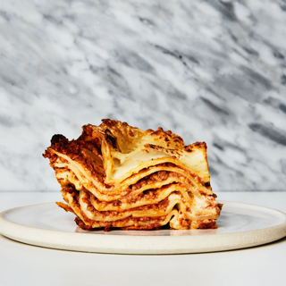

The BEST Lasagna

Description
So this lasagna has been a lovechild of asian and italian flavors, creating a deep bolognese that is enriched with umami from a gamut of ingredients that are commonly found in Asian-American home pantries.
Ingredients
Serves 4-5
- 2 Boxes of Dried Sheet Lasagna Pasta
- 4 oz tomato paste
- 1 1/2 lbs mix of Ground Beef and Pork
- 3 cups ricotta
- 1 cup aged parmesean
- 1 cup shredded mozzarella
- 8oz yellow onion
- 8oz celery
- 8oz carrot
- 4oz cherry tomatoes cut in half
- 10 cloves of minced garlic
- 3 oz fish sauce
- 1 tbsp red chili flake
- 1 tsp white pepper
- 2 tsp MSG
- 1 tbsp chicken bouillon
- 6oz beef stock
- 2 tbsp extra virgin olive oil
- 2 tbsp neutral oil
- 4 oz cooking wine (red or white)
- Salt and pepper to taste
Method
- Mix ground meat with salt, fish sauce, chili flake, white pepper, MSG, and chicken bouillon.
- Pre-heat a saucepan on high heat, add the ground beef mixture and brown the meat. Once browned, set aside and take the pan off the heat. DO NOT RINSE PAN.
- Chop the onion, celery, and carrot into same size pieces for the mirepoix. Set aside.
- Put the pan with browned bits back on medium hight heat.
- Combine the mirepoix (see above) with the halved cherry tomatoes into the pan with neutral oil and olive oil.
- Once the vegetables have softened, incorporate tomato paste, add cooking wine and reduce until almost dry.
- Once almost dry, add in 6oz stock and the browned meat.
- Bring this mixture to a gentle simmer and let sit until the stock has evaporated and the meat is tender. Must add more stock if the meat is not yet tender.
- Preheat oven to 400 degrees fahrenheit.
- The meat has cooked tender, butter a baking tray and begin layering dried pasta, meat mixture, ricotta, parmesean, and repeat until tray is filled. The final layer should be topped with ricotta, mozzarella, and aged parmesean to brown.
- Place layered tray into the oven for 45 minutes or until pasta is fork tender.
- Let rest for at least half of the cooking time in the oven, ENJOY.
Return to Home